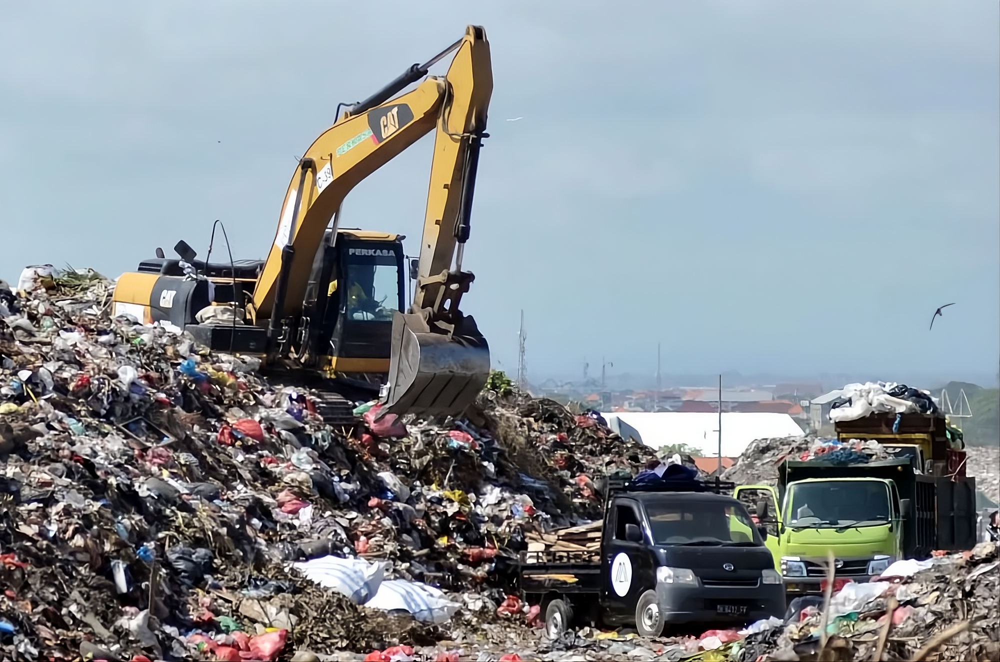

Mengapa Cara Lama Tidak Lagi Cukup?
Pertumbuhan kota yang eksponensial menyisakan krisis pengelolaan limbah tersembunyi. Data di bawah menunjukkan urgensi untuk mulai memilah sampah secara mandiri dari pintu rumah tangga demi menjaga keberlanjutan bumi kita.
Kebuntuan di Hulu
81% sampah rumah tangga tercampur langsung di tempat pembuangan, merusak potensi daur ulang materi anorganik.
Metana di TPA
Sampah organik basah yang tertimbun anaerob menghasilkan gas metana dengan pemanasan global 25 kali lebih kuat dari CO₂.
Partisipasi Digital Rendah
60%+ warga kota ingin mendaur ulang, namun terhambat ketiadaan panduan digital dan alat kalkulasi emisi karbon.
Eco-Diagnosis: Cari Solusi Hijau Anda
Pilih kendala lingkungan terbesar yang Anda hadapi saat ini untuk menemukan panduan digital yang paling sesuai.
Pilih kendala utama Anda:
Rekomendasi Solusi Anda
Deskripsi rekomendasi akan muncul secara dinamis di sini.
Aksi Sederhana Berdampak Nyata
Temukan rangkaian solusi mandiri kami untuk membantu Anda mengubah pola hidup menjadi lebih ramah lingkungan.

Eco-Learn
Arsip digital klasifikasi sampah Organik, Anorganik, dan B3 lengkap dengan tips praktis pengelolaan di rumah.

Eco-Connect
Temukan lokasi bank sampah terdekat, relawan kebersihan, dan komunitas peduli lingkungan di kota Anda.

Eco-Play
Latih ketangkasan dan pengetahuan pemilahan sampah Anda secara langsung melalui game drag-and-drop interaktif.
Distribusi Dampak Pengelolaan
Setiap Lembar Sampah Terpilah Berharga
Kami percaya gerakan penyelamatan bumi berakar pada keterbukaan dan konsistensi warga. Dengan membiasakan memilah sampah dari pintu dapur, kita berkontribusi secara langsung untuk mengurangi volume pembuangan sampah ke TPA regional hingga 65% melalui pengomposan mandiri dan penyaluran bahan daur ulang yang bersih.